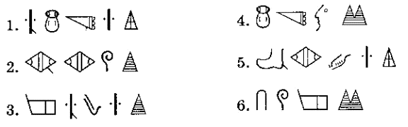

Acertijo original de A. Zhurinsky. Adaptación al inglés de Valentin Vydrin.
A principios del siglo XX, los arqueólogos habían reunido una gran cantidad de inscripciones que se creían escritas en la antigua lengua hitita. Por desgracia, esos escritos fueron totalmente incomprensibles hasta que un estudioso descubrió la clave: muchas de las palabras de las inscripciones eran nombres de regiones, ciudades o reyes. Esta clave permitió a los estudiosos revelar los secretos de este antiguo sistema de escritura. ¡Pero también se descubrió que la lengua no era el hitita! Se trata de una lengua de Anatolia llamada luvita (o luvio). Algunos de los nombres importantes eran los siguientes:
Regiones: Khamatu, Palaa.
Ciudades: Kurkuma, Tuvarnava.
Reyes: Varpalava, Tarkumuva.
1. Las siguientes son las inscripciones que corresponden a estos nombres. Tu tarea es emparejar cada inscripción con el nombre que representa. El proceso que uses para resolver este acertijo es muy parecido a lo que hacen los lingüistas arqueológicos cuando descubren escritos e inscripciones en lenguas desconocidas.
